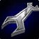
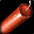
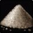
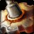
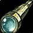
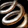
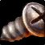
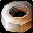

Übersicht
Ingenieurskunst · Herstellung
Bergbau
Bomben, Granaten, Werkzeuge, Gadgets, Brillen und Camping-Reparaturhilfen.
Besonders stark für PvP, Utility und Komfort; viele Craft-Komponenten müssen aufgehoben werden.
Berufsränge
| Rang | Skillcap | Vorbedingung | Hinweis |
|---|---|---|---|
| Lehrling | 75 | — | Ab Charakterstart |
| Geselle | 150 | ab Skill 50 | Charakterlevel 10 |
| Experte | 225 | ab Skill 125 | Teilweise Buch/Speziallehrer |
| Fachmann | 300 | ab Skill 200 | Teils Quest oder Speziallehrer |
Schnellroute 1–300
| Skill | Craft / Material | Crafts | Materialien oder Farmgebiete | Rezeptquelle / Hinweis | Details |
|---|---|---|---|---|---|
| 1–30 | Raues Sprengpulver | 60 | 60× Rauer Stein | Lehrer; für Kupferbomben behalten | |
| 30–50 | Handvoll Kupferbolzen | 30 | 30× Kupferbarren | Lehrer; für Kupferbomben behalten | |
| 50–51 |  Bogenlichtschraubenschlüssel | 1 | 6× Kupferbarren | Lehrer; Werkzeug behalten | |
| 51–75 |  Raue Kupferbombe | 30 | 30× Kupferbarren, 30× Kupferbolzen, 60× Sprengpulver, 30× Leinenstoff | Geselle beim Lehrer | |
| 75–90 |  Grobes Sprengpulver | 60 | 60× Grober Stein | Lehrer; für grobes Dynamit behalten | |
| 90–100 | 20 | 60× Grobes Sprengpulver, 20× Leinenstoff | Lehrer | ||
| 100–105 |  Silberkontakt | 5 | 5× Silberbarren | Lehrer; alternativ Flying Tiger Goggles | |
| 105–125 | Bronzeröhre | 25 | 50× Bronzebarren, 25× Schwaches Flussmittel | Lehrer; einige Röhren für Zielfernrohre behalten | |
| 125–135 |  Standardzielfernrohr | 10 | 10× Bronzeröhre, 10× Moosachat | Lehrer | |
| 135–150 | Schweres Sprengpulver + Surrendes Bronzegerät | 45 | 30× Schwerer Stein; 30× Bronze, 15× Wollstoff | Lehrer; für explosives Schaf behalten | |
| 150–160 |  Bronzegestell | 15 | 30× Bronzebarren, 15× Mittleres Leder, 15× Wollstoff | Experte, Komponenten behalten | |
| 160–175 | 15 | 30× Schweres Sprengpulver, 15× Surrendes Bronzegerät, 15× Bronzegestell, 30× Wollstoff | Lehrer | ||
| 175–194 | 30 | Massiver Stein oder Eisenbarren + Schweres Sprengpulver + Seidenstoff | Lehrer; Variante nach AH-Preis | ||
| 194–195 | Gyromatischer Mikroregler | 1 | 4× Stahlbarren | Lehrer; für weitere Rezepte behalten | |
| 195–200 | Mithrilröhre | 6 | 18× Mithrilbarren | Lehrer | |
| 200–215 | Instabiler Auslöser | 20 | 20× Mithrilbarren, 20× Magiestoff, 20× Massives Sprengpulver | Fachmann bei Buzzek, Gadgetzan | |
| 215–238 |  Mithrilgehäuse | 40 | 120× Mithrilbarren | Lehrer; für Bomben behalten | |
| 238–250 | Hochexplosive Bombe | 20 | 40× Mithrilgehäuse, 20× Instabiler Auslöser, 40× Massives Sprengpulver | Lehrer | |
| 250–260 | Dichtes Sprengpulver | 30 | 60× Verdichteter Stein | Lehrer | |
| 260–285 |  Thoriumapparat | 35 | 105× Thoriumbarren, 35× Runenstoff | Bauplan: bei Sovik (Orgrimmar) / Gearcutter Cogspinner (Eisenschmiede) | |
| 285–300 | 20 | 120× Thoriumbarren | Bauplan bei Xizzer Fizzbolt, Ewige Warte, Winterspring |
Materialien / Einkaufsliste
Diese Materialmengen orientieren sich an der Schnellroute. Alternativrezepte ersetzen die jeweiligen Schritte – nie beide Alternativen gleichzeitig einkaufen.
Berufslehrer & Freischaltung
Forever-Systeme & Besonderheiten
Wichtige Synergien
Bergbau
Neue Rezepte und Lagerfeuer-Gegenstände können nützlich sein. Nicht alle Neben- und Sammelberufe geben dieselben Legacy-Punkte wie Herstellungsberufe.
Praktische eigene Crafts und Freischaltung
Bei diesem Beruf sind nützliche Tränke, Geräte, Nahrung oder Verbände wichtiger als reine Rüstung. Klick auf ein Rezept in der Schnellroute für Materialdetails.
Frühes Gadget
Freischalten: Lehrer als Alternative zu Silberkontakt
Material: Leichtes Leder + Tigerauge
PvP-/Utility-Gadget
Freischalten: Lehrer ab Skill 160
Material: Schweres Sprengpulver + Bronzegestell
Beliebte Komponente und Verkaufsgut
Freischalten: Bauplan, Händler Sovik / Cogspinner
Material: Thoriumbarren + Runenstoff
Camping-/Reparaturhilfe
Freischalten: Blueprint/Forever-Camping
Material: Metallteile + technische Komponenten
Quellen & Datenstand
Alle Materialmengen sind Planungshilfen. Welche Rezepte bereits im Live-Client freigeschaltet sind, kann sich gegenüber den Beta-Daten ändern.